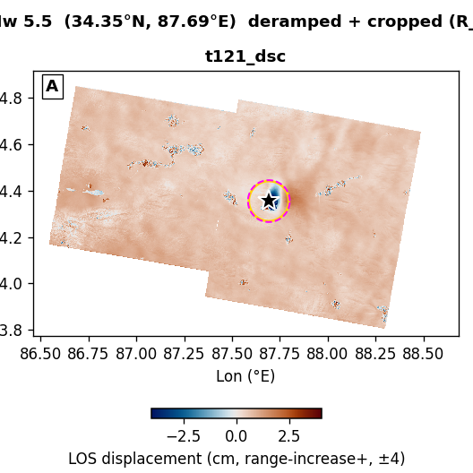
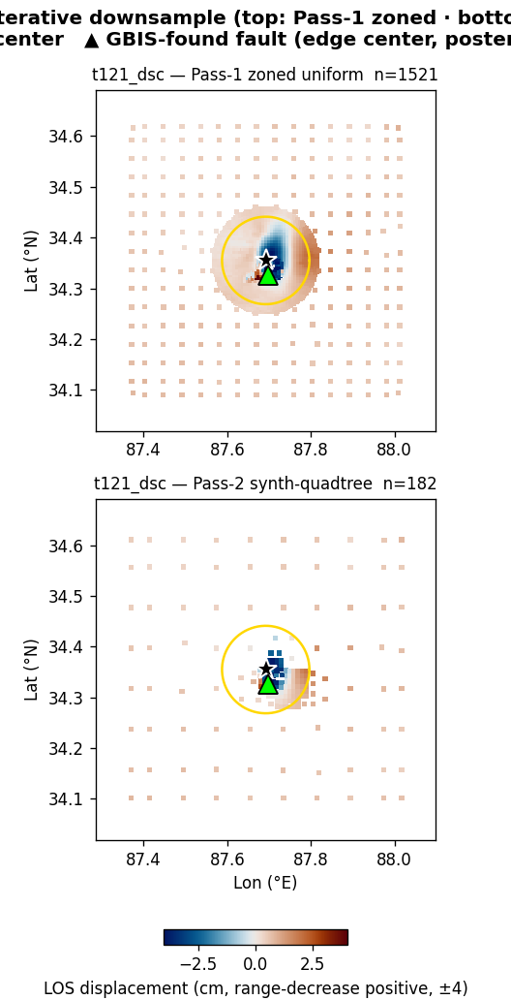
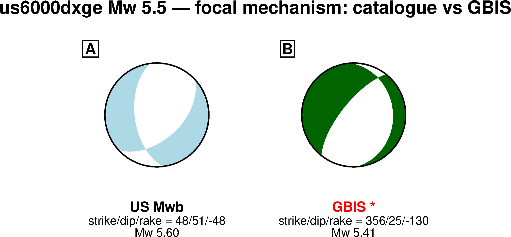
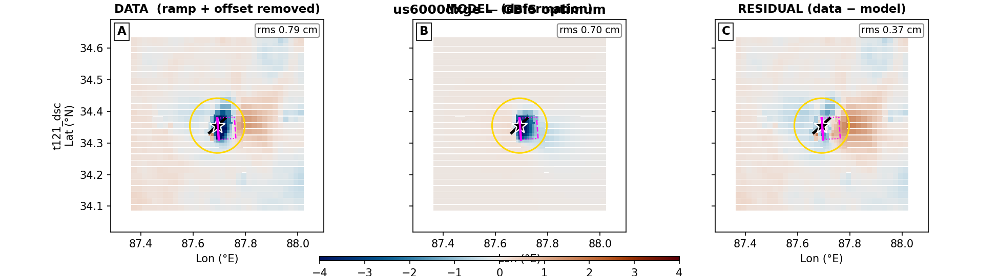
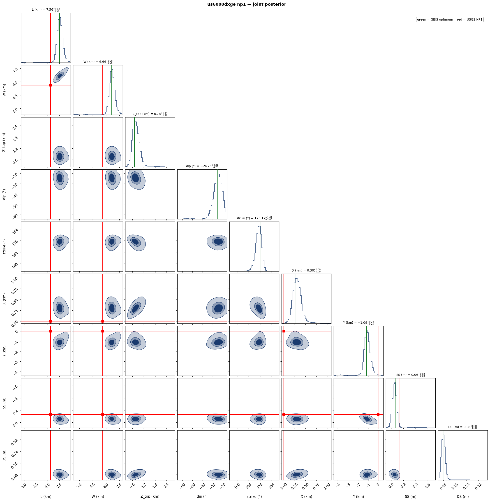
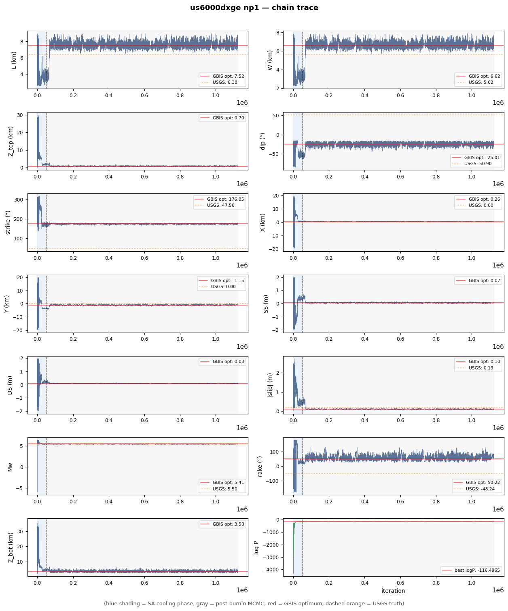

us6000dxge — Mw 5.5 — GBIS report
🟡 USABLE — with caveats
Marginal axes: ess, geweke. Inversion is acceptable but review the flagged metrics before downstream use.
Event: western Xizang · (34.355°N, 87.692°E, depth 8.0 km)
USGS NP1: strike 47.6° / dip 50.9° / rake -48.2°
USGS NP2: strike 172.8° / dip 54.6° / rake -129.3°
GBIS optimum: strike 357.8° / dip 34.1° / rake -40.3° / Mw 5.58 (best logP -85.4673)
1. Raw observations (deramped + cropped)

2. Two-round iterative downsampling (Pass-1 zoned → Pass-2 synth-quadtree)

3. Initial start, search range, and GBIS-reported optimum
| parameter | start | lower | upper | USGS NP1 / W&C | GBIS optimum |
|---|
| L (km) | 6.38 | 2.55 | 8.94 | 6.38 | 8.20 |
| W (km) | 5.62 | 2.25 | 7.87 | 5.62 | 7.22 |
| Z_top (km) | 5.82 | 0.10 | 8.00 | 5.82 | 0.45 |
| dip (°) | 50.9 | 15.9 | 85.9 | 50.9 | 34.1 |
| strike (°) | 47.6 | 317.6 | 137.6 | 47.6 | 357.8 |
| X (km) | 0 | -20.0 | 20.0 | 0 | 0.05 |
| Y (km) | 0 | -20.0 | 20.0 | 0 | 0.45 |
| SS (m) | +0.129 | -2.00 | +2.00 | +0.129 | +0.116 |
| DS (m) | -0.144 | -2.00 | +2.00 | -0.144 | -0.099 |
| derived | USGS | GBIS |
|---|
| |slip| (m) | | 0.193 | 0.152 |
| rake (°) | | -48.2 | -40.3 |
| Mw | | 5.50 | 5.58 |
| Z_bot (km) | | 10.18 | 4.50 |
| 震源深度 / centroid depth (km) | | 8.00 | 2.47 |
震源深度对比：USGS = 报告的震源（hypocenter）深度；GBIS = 断层质心深度 (Z_top+Z_bot)/2。
Note: GBIS optimum = single MAP sample reported by GBIS in invResults.model.optimal, NOT a chain median.
Adaptive grade — zone YELLOW
acceptance 0.22 (0.20–0.45) · ESS 103 (≥250) · Geweke |z| 10.41 (≤2) · VR_min 0.85
grades: ess=C · acceptance=B · geweke=D · vr_min=A · vr_mean=A · railed=A · delta_mw=A · delta_strike=A
4. Beachball comparison

5. Triplet — data / model / residual using GBIS optimum

6. Joint-posterior corner plot

Red truth lines = USGS NP1 (W&C scaled). Density contours = 39%, 68%, 95% credible regions.
7. Burn-in / chain trace

Blue shading = SA cooling (first 50k iterations). Gray = post-burnin MCMC. Red horizontal = GBIS reported optimum. Dashed orange = USGS NP1 W&C value.
8. Agent Review (LLM advisory)
Rating: ?
· LLM advisor not invoked
Recommendation: manual_review
Confidence: low
Concerns:- ANTHROPIC_API_KEY not set — to enable LLM advisory, export ANTHROPIC_API_KEY and re-run
Rationale: ANTHROPIC_API_KEY not set — to enable LLM advisory, export ANTHROPIC_API_KEY and re-run
Advisory only. Generated by claude ?
(0 tokens) — not used to drive pipeline actions.